Arcos, azulejo verde, luz quente e o letreiro oval no centro. O projeto da loja é padrão da rede: você recebe o caderno técnico completo e a franqueadora acompanha a obra.
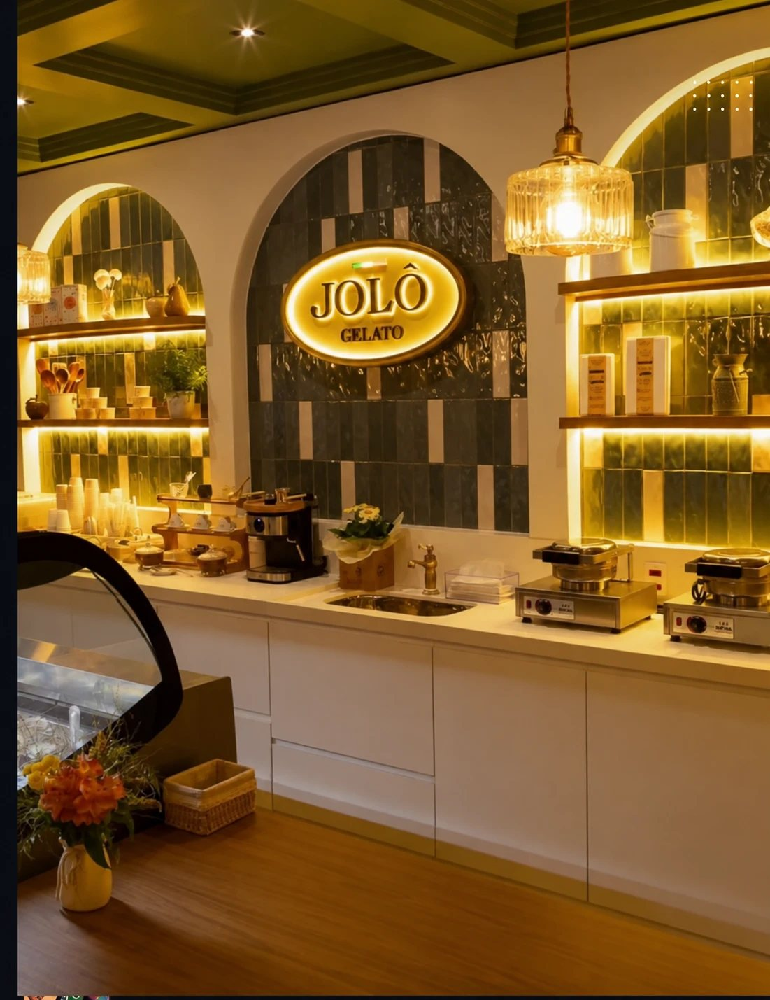
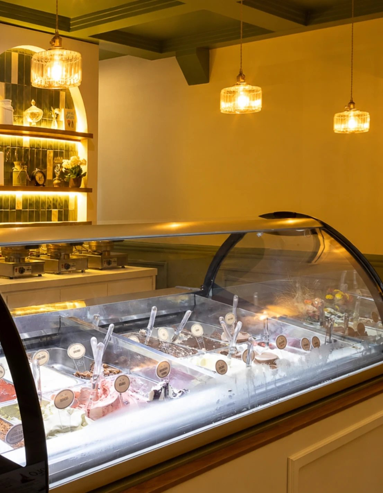
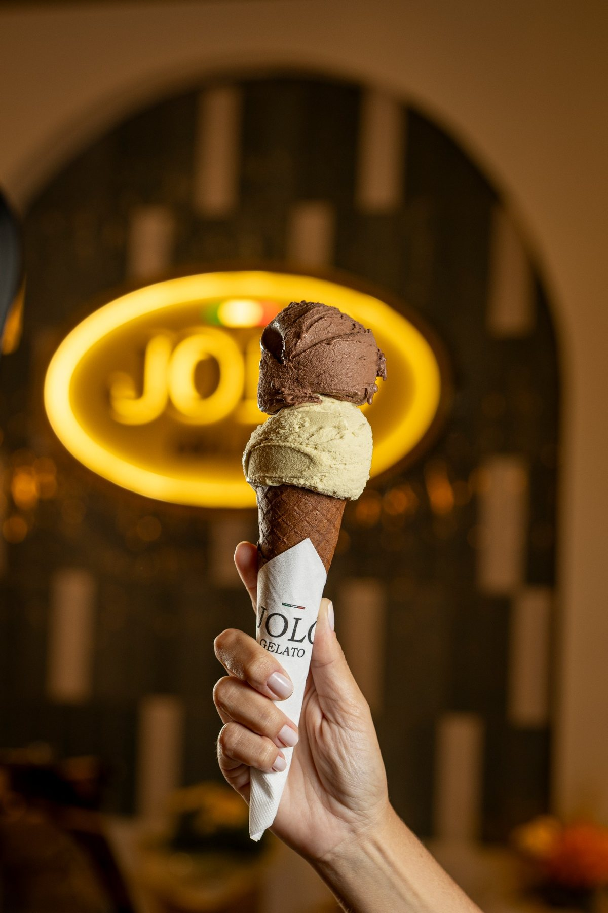
A Jolô não nasceu numa capital. Nasceu em Três Fronteiras, no interior de São Paulo, da tradição familiar de fazer sorvete. Foi o cliente que perguntou primeiro: “a Jolô é franquia?”
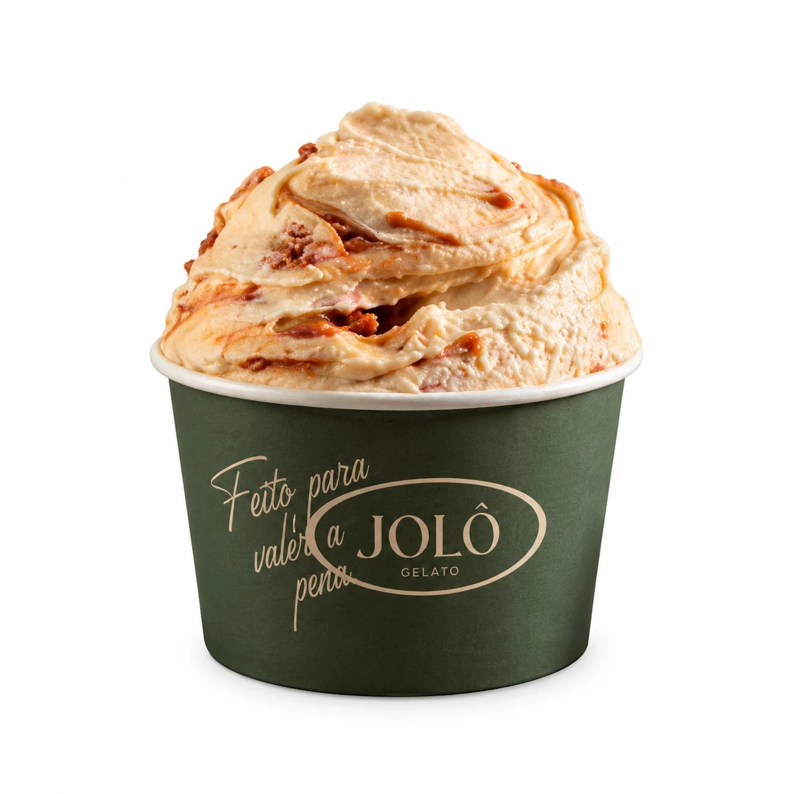
Tudo começou quando Rafael Ulian, inspirado pela tradição familiar na produção de sorvetes, decidiu criar algo único e especial. Com paixão pela arte da gelateria italiana, ele se aprofundou nas melhores técnicas e ingredientes. Assim nasceu a Jolô Gelato, conquistando paladares desde o primeiro dia.
O sucesso foi imediato e, ao lado de Raylan, Rafael inaugurou a segunda unidade. O impacto foi tão grande que os clientes começaram a perguntar:
“A Jolô é franquia?”
A ideia começou a tomar forma. Ricardo, especialista em gestão de negócios, entrou para estruturar o modelo de franquias da Jolô Gelato. Com um modelo padronizado e sólido, a expansão começou.
A marca foi oficialmente lançada e quatro unidades entraram em operação: Santa Fé do Sul, Fernandópolis, Jales e Sorocaba.
A Jolô chega ao estado do Rio de Janeiro. Em novembro, começa a implantação da unidade de São Paulo.
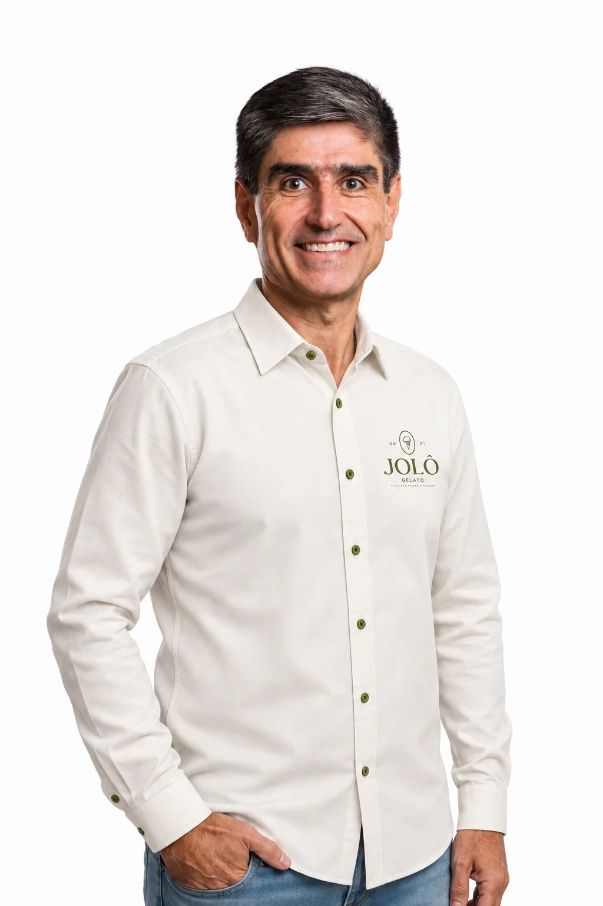
Levar a experiência do sabor Jolô para todo o Brasil através do modelo de franquias, rentabilizando todos os stakeholders.
Ser reconhecida pela rede de franqueados como um negócio próspero que transforma vidas.
Produto, Serviço e Gestão: a base que sustenta nossa missão de adoçar momentos e criar experiências inesquecíveis.
R$ 260 mil para abrir. 18 a 24 meses para o dinheiro voltar. Mais de 18% de margem líquida.
Unidades bem geridas podem faturar acima de R$ 100 mil por mês. Investimento total considerando equipamentos seminovos.
Gelatos artesanais produzidos com ingredientes selecionados e técnicas italianas autênticas. A produção acontece dentro da unidade, em apenas 3 passos, com a Base Mix Gelato fornecida pela franqueadora. Padrão em todas as lojas, sem desperdício.
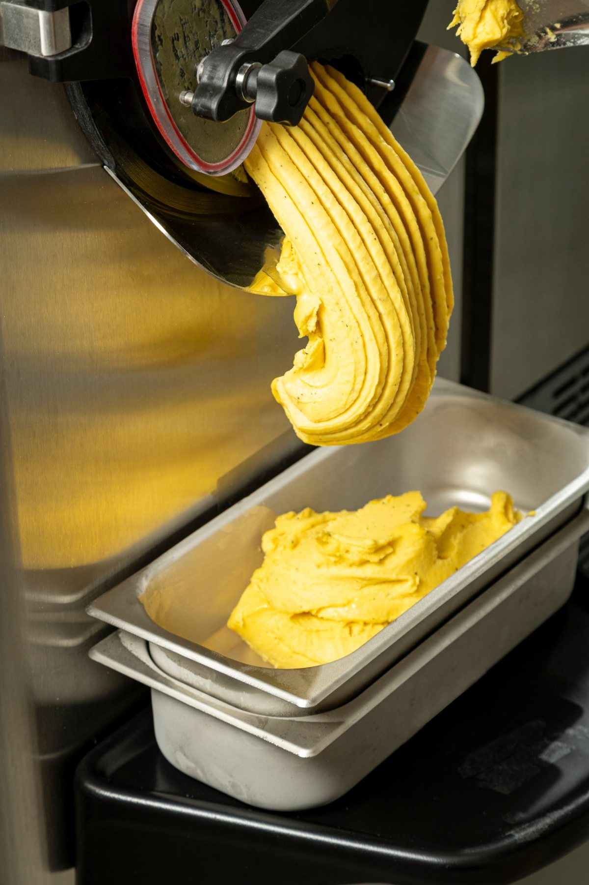
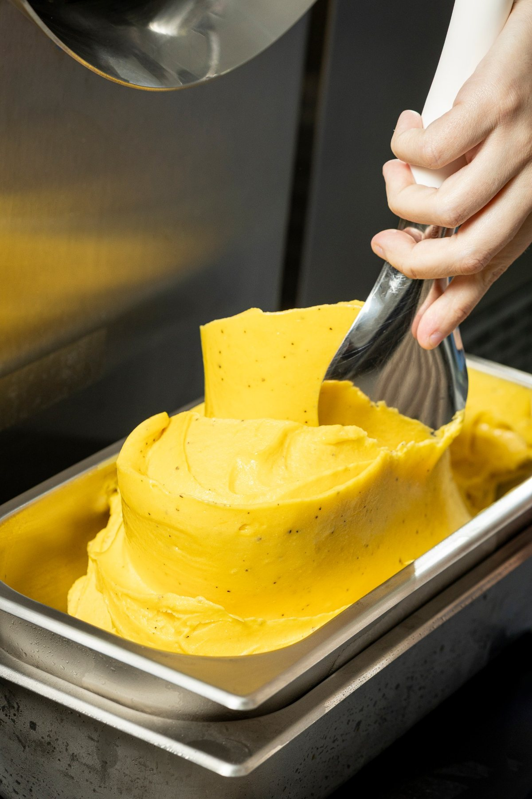
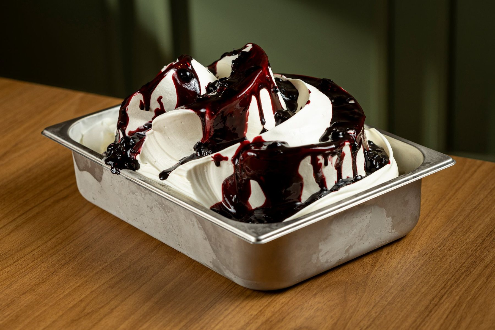
A franqueadora fornece a base. Você não depende de receita de memória nem de fornecedor de fora.
Processo simples e padronizado, que garante o mesmo gelato em Sorocaba, em Petrópolis e na sua cidade.
Produção diária dentro da loja: o cliente vê, escolhe e volta.
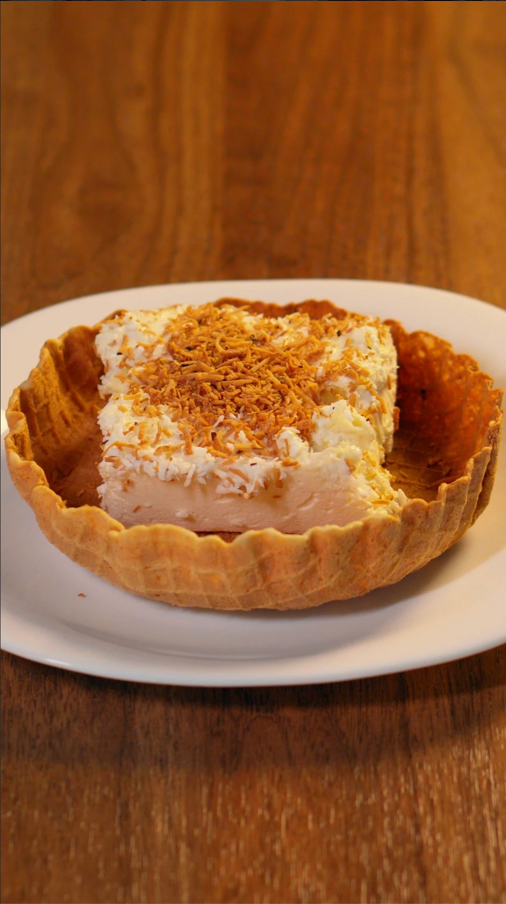
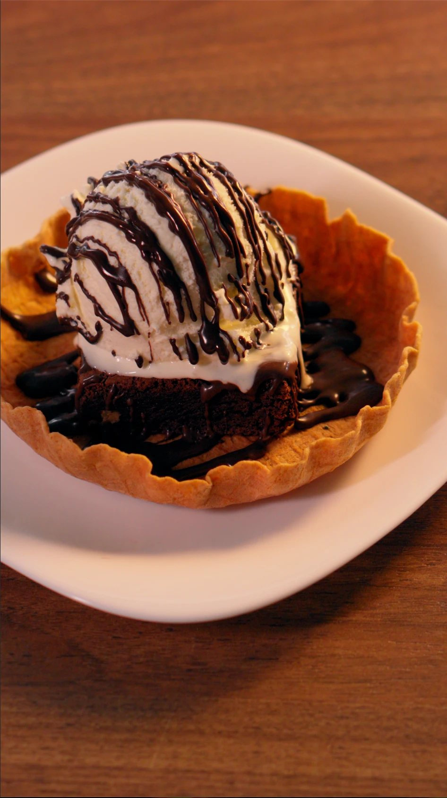
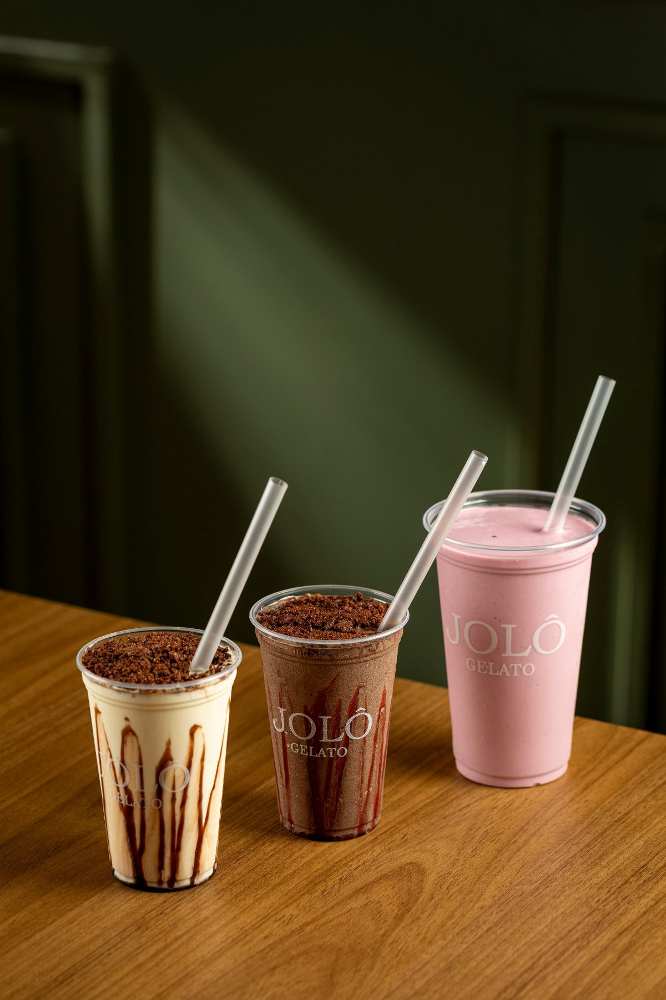
Unidades bem geridas podem faturar acima de R$ 100.000 por mês.
Um dos menores prazos do setor.
Um negócio financeiramente saudável.
Tudo isso para que você foque no que realmente importa: faturar e expandir o seu negócio.
Gelatos artesanais com ingredientes selecionados e técnicas italianas autênticas.
Testado em diferentes praças, com resultado consistente, sem perder a essência.
Produção em 3 passos, padronização e redução de desperdícios.
Gestão online da unidade, com monitoramento total do negócio.
Suporte contínuo ao franqueado.
Campanhas personalizadas para atrair clientes e aumentar o faturamento.
Estratégia para crescimento sustentável.
Para operação, gestão e liderança.
Entender a apresentação e assistir ao vídeo final.
Preencher a ficha de qualificação.
Reunião estratégica com o diretor de expansão.
Visita a uma unidade para conhecer a operação.
Recebimento da COF e assinatura do contrato.
Pagamento da taxa de franquia e início do plano de inauguração.
Conhecer a estrutura, os processos e o modelo de negócio Jolô, direto com os especialistas da marca.
Aplicar o conhecimento na prática e preparar a equipe para a operação.
Garantir que a operação esteja rodando perfeitamente e ajustar o que for preciso.
Empreendedores prontos para fazer parte dessa jornada. O que buscamos:
“A gelateria representa, além de um excelente investimento, um espaço para desfrutar de produtos incríveis, feitos com os melhores ingredientes frescos, proporcionando aos clientes momentos de alegria, conquistas e convivência em um ambiente familiar.Franqueados Jolô
“Ter uma gelateria nunca foi uma ideia que passou pela minha cabeça. Passar pela implantação, ver a loja tomando forma e observar as pessoas provando o gelato pela primeira vez e saindo mais felizes do que chegaram me enche de alegria. Tomamos a decisão certa.Franqueada Jolô
“Estamos muito satisfeitos com o suporte recebido do franqueador, especialmente na análise dos resultados da Jolô Jales, no apoio para definir novas estratégias de marketing e vendas e em tudo o que foi necessário desde a implantação.Jolô Jales
O mercado de gelatos premium está em alta e o segmento de gelato artesanal cresce 15% ao ano. As pessoas buscam experiências gastronômicas únicas, e o gelato é uma paixão global. É um setor validado, para investir com segurança.
Produto exclusivo de alta qualidade, operação simples e padronizada, suporte completo ao franqueado e um modelo de negócio testado em diferentes praças. Tudo isso com um dos menores prazos de retorno do setor: 18 a 24 meses.
Gelatos artesanais produzidos dentro da loja com ingredientes selecionados e técnicas italianas autênticas, num ambiente pensado para a experiência completa do cliente.
Investimento total de R$ 260 mil, faturamento possível acima de R$ 100 mil por mês e margem líquida acima de 18%. E você fala direto com quem fundou a marca.
Pode. Com a operação padronizada em 3 passos, a equipe treinada e o sistema de gestão, a loja funciona sem o dono precisar estar no balcão o dia todo.
Gente que gosta de pessoas, tem habilidade empreendedora, é responsável e resiliente, e compartilha os três P's da Jolô: Paixão, Paciência e Perseverança.
Clique em “Fale com o dono”. Você conversa direto pelo WhatsApp, recebe a apresentação completa e a ficha de qualificação, e marcamos a reunião com o diretor de expansão.
Sem formulário e sem espera. Você fala direto com o fundador pelo WhatsApp e recebe a apresentação completa.